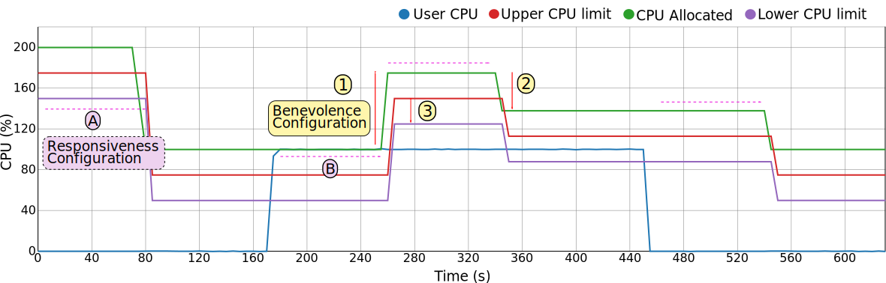
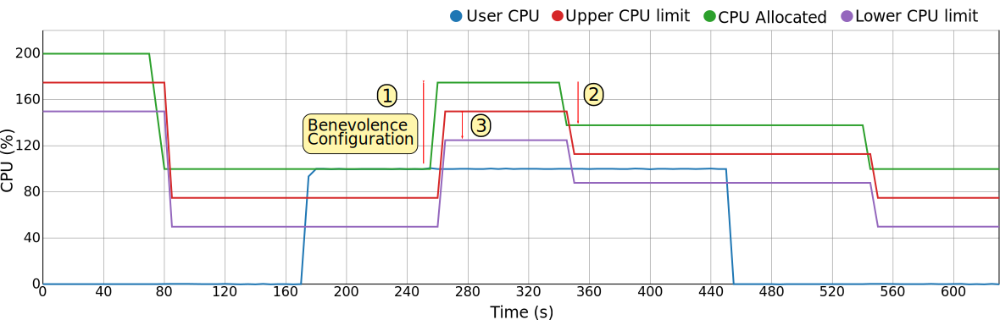

The scaling processes can be configured to better adapt to the needs of the applications. Such configuration can be even changed dynamically if needed.
The configuration can also be divided between two dimensions, being the first the time dimension and the second one the resource limit dimension. To better approach these two dimensions, the first one is referred to as the Responsiveness of the framework, while the second one is referred to as the Benevolence.

Responsiveness
As its name implies, this configuration aspect of the framework dictates how fast the changes are made when it comes to adapting the resource limits to the application's real usage. The reason why we have to take into account this, instead of just performing instant scaling operations once the limits have been surpassed, lies behind the concept of hysteresis.
If we consider hysteresis as the degree of variation of the resource usage patterns, we need to take into account some kind of time buffer before changing the resource limits. This time buffer allows to have some assurance that after a scaling operation, another one won't be needed soon after.
As seen on the image above, the responsiveness can be modulated differently to adapt to two possible scenarios:
- A: Time to pass before performing a scaling down operation.
- B: Time to pass before performing a scaling up operation.
It has to be noted the difference between the two. While on the A scenario we can allow more time to pass, as the resources are in the end being underutilized, so that the application is not being penalized, on the B scenario the application may be close to, or suffering a bottleneck, thus we may consider to shorten such times to avoid execution overheads.

To tune the Responsiveness of the framework, the request-generating Rules will have to be modified.
Benevolence
In the case of Benevolence, as its name says, it modules how the framework addresses the scaling operations in terms of the number of resources that it takes away or that it gives.
On the one hand, a 'benevolent' framework adjusts the resources leaving an ample margin between the limits so that the areas are large enough to accommodate any resource variations, while at the same time giving a large number of resources when scaling up.
On the other hand, if we want to push the serverless scenario to the limit we can set narrower boundaries and more restrained scaling up operations.
To module the behaviour between these two options, thus tuning the framework to behave closer to the traditional instance or closer to the serverless paradign, we can use the following configuration parameters:
- 1) Scaling up amount. A fixed and configurable amount.
- 2) Scaling down policy. Although several are possible, to implement the serverless scenario the only one usable is the 'fit to usage', which looks to set resource limits so that the usage falls between the upper and lower boundaries.
- 3) Boundary amount. This parameter is used combined with the scaling down policy to define the final allocated resource limit.

To tune the Benevolence of the framework, mainly the amount parameter of the down-scaling Rules will have to be adapted.
Rule configuration
As previously stated, in order to configure the framework on the vertical and time dimensions, the Rule documents have to be modified.
To tune the Benevolence, we have to modify the request-generating Rules to specify the amount of time windows desired before a scaling request is generated by the 'Guardian'.
As seen in the next Rule document, the number of time windows where the usage had to surpass the upper limits before one of this kind of requests is generated is 4. We can also notice that the number of the opposite events (usage fell below the lower limit) must also be lower than 2. This is done in order to avoid hysteresis, skipping scenarios where the resource usage is highly volatile and constantly crossing both limits.
CpuRescaleUp = dict(
_id='CpuRescaleUp',
type='rule',
resource="cpu",
name='CpuRescaleUp',
rule=dict(
{"and": [
{">=": [
{"var": "events.scale.up"},
4]},
{"<=": [
{"var": "events.scale.down"},
2]}
]}),
events_to_remove=4,
generates="requests",
action={"requests": ["CpuRescaleUp"]},
amount=75,
rescale_by="amount",
active=True
)
When it comes to Benevolence, we can also see on the previous Rule document that the amount of CPU increased on a scaling up operation will be 75 shares.
Finally, in order to configure the boundary parameter, we have to use the limits documents of each container. On these documents there is a boundary applied for each resource, as seen next:
{
cpu: {
boundary: 25,
lower: 50,
upper: 75
}
}